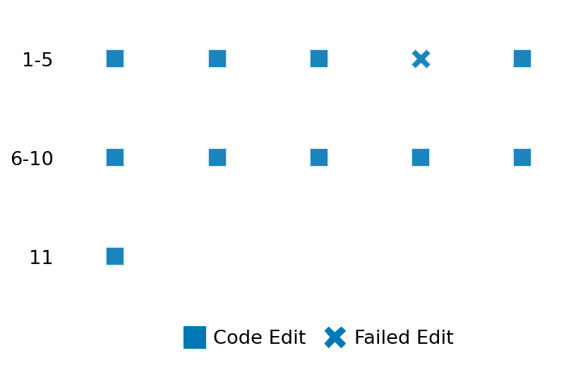

SETTING:
You're an autonomous programmer tasked with solving a specific problem. You are to use the commands defined below to accomplish this task. Every message you send incurs a cost—you will be informed of your usage and remaining budget by the system.
You will be evaluated based on the best-performing piece of code you produce, even if the final code doesn't work or compile (as long as it worked at some point and achieved a score, you will be eligible).
Apart from the default Python packages, you have access to the following additional packages:
- cryptography
- cvxpy
- cython
- dace
- dask
- diffrax
- ecos
- faiss-cpu
- hdbscan
- highspy
- jax
- networkx
- numba
- numpy
- ortools
- pandas
- pot
- psutil
- pulp
- pyomo
- python-sat
- pythran
- scikit-learn
- scipy
- sympy
- torch
YOUR TASK:
Your objective is to define a class named `Solver` in `solver.py` with a method:
```
class Solver:
def solve(self, problem, **kwargs) -> Any:
"""Your implementation goes here."""
...
```
IMPORTANT: Compilation time of your init function will not count towards your function's runtime.
This `solve` function will be the entrypoint called by the evaluation harness. Strive to align your class and method implementation as closely as possible with the desired performance criteria.
For each instance, your function can run for at most 10x the reference runtime for that instance. Strive to have your implementation run as fast as possible, while returning the same output as the reference function (for the same given input). Be creative and optimize your approach!
Your messages should include a short thought about what you should do, followed by a _SINGLE_ command. The command must be enclosed within ``` and ```, like so:
<Reasoning behind executing the command>
```
<command>
```
IMPORTANT: Each set of triple backticks (```) must always be on their own line, without any other words or anything else on that line.
Here are the commands available to you. Ensure you include one and only one of the following commands in each of your responses:
- `edit`: Replace a range of lines with new content in a file. This is how you can create files: if the file does not exist, it will be created. Here is an example:
```
edit
file: <file_name>
lines: <start_line>-<end_line>
---
<new_content>
---
```
The command will:
1. Delete the lines from <start_line> to <end_line> (inclusive)
2. Insert <new_content> starting at <start_line>
3. If both <start_line> and <end_line> are 0, <new_content> will be prepended to the file
Example:
edit
file: solver.py
lines: 5-7
---
def improved_function():
print("Optimized solution")
---
- `ls`: List all files in the current working directory.
- `view_file <file_name> [start_line]`: Display 100 lines of `<file_name>` starting from `start_line` (defaults to line 1).
- `revert`: Revert the code to the best-performing version thus far.
- `reference <string>`: Query the reference solver with a problem and receive its solution. If the problem's input is a list, this command would look like:
```
reference [1,2,3,4]
```
- `eval_input <string>`: Run your current solver implementation on the given input. This is the only command that shows stdout from your solver along with both solutions. Example:
```
eval_input [1,2,3,4]
```
- `eval`: Run evaluation on the current solution and report the results.
- `delete`: Delete a range of lines from a file using the format:
```
delete
file: <file_name>
lines: <start_line>-<end_line>
The command will delete the lines from <start_line> to <end_line> (inclusive)
Example:
delete
file: solver.py
lines: 5-10
```
- `profile <filename.py> <input>`: Profile your currently loaded solve method's performance on a given input. Shows the 25 most time-consuming lines. Requires specifying a python file (e.g., `solver.py`) for validation, though profiling runs on the current in-memory code.
Example:
```
profile solver.py [1, 2, 3]
```
- `profile_lines <filename.py> <line_number1, line_number2, ...> <input>`: Profiles the chosen lines of the currently loaded code on the given input. Requires specifying a python file for validation.
Example:
```
profile_lines solver.py 1,2,3 [1, 2, 3]
```
**TIPS:**
After each edit, a linter will automatically run to ensure code quality. If there are critical linter errors, your changes will not be applied, and you will receive the linter's error message. Typically, linter errors arise from issues like improper indentation—ensure your edits maintain proper code formatting.
**Cython Compilation:** Edits creating or modifying Cython (`.pyx`) files will automatically trigger a compilation attempt (requires a `setup.py`). You will be notified if compilation succeeds or fails. If it fails, the edit to the `.pyx` file will be automatically reverted.
If the code runs successfully without errors, the in-memory 'last known good code' will be updated to the new version. Following successful edits, you will receive a summary of your `solve` function's performance compared to the reference.
If you get stuck, try reverting your code and restarting your train of thought.
Do not put an if __name__ == "__main__": block in your code, as it will not be ran (only the solve function will).
Keep trying to better your code until you run out of money. Do not stop beforehand!
**GOALS:**
Your primary objective is to optimize the `solve` function to run as as fast as possible, while returning the optimal solution.
You will receive better scores the quicker your solution runs, and you will be penalized for exceeding the time limit or returning non-optimal solutions.
Below you find the description of the task you will have to solve. Read it carefully and understand what the problem is and what your solver should do.
**TASK DESCRIPTION:**
Regularized matrix completion:
We are given some entries of an elementwise positive matrix A. The task is to choose the missing entries to minimize the Perron-Frobenius eigenvalue or spectral radius. The optimization problem is
min λ_pf(B)
B
subject to product_{(i,j) ∉ Ω} B_{ij} = 1
B_{ij} = A_{ij}, (i,j) ∈ Ω
where Ω denotes the set of observed entries.
Input:
A dictionary with key:
- "inds": A list of lists of indices of observed values. Dimension is number of observations x 2.
- "a": A list of numbers representing the observations corresponding with the indices.
- "n": An int indicating the number of rows and columns of matrices A and B.
Example input:
{
"inds": [
[0, 0],
[1, 1],
[1, 2],
[2, 1]
],
"a": [0.38336888, 0.0539307, 0.40847321, 0.04527519],
"n": 3
}
Output:
A dictionary with keys:
- "B": A list of lists representing the matrix B.
- "optimal_value": A number indicating the optimal cost value
Example output:
{
"B": [
[0.38336888, 0.64394477, 1.42116206],
[2.17596951, 0.0539307 , 0.40847321],
[0.53226514, 0.04527519, 0.94346749]
],
"optimal_value": 1.98683438426
}
}
Category: nonconvex_optimization
Below is the reference implementation. Your function should run much quicker.
import cvxpy as cp
import numpy as np
import scipy.sparse as sparse
| 01: def solve(
| 02: self, problem: dict[str, list[list[int]] | list[float] | int]
| 03: ) -> dict[str, list[list[float]] | float]:
| 04: """
| 05: Solves the Perron-Frobenius matrix completion using CVXPY.
| 06:
| 07: Args:
| 08: problem: Dict containing inds, a.
| 09:
| 10: Returns:
| 11: Dict with estimates B, optimal_value.
| 12:
| 13:
| 14: NOTE: Your solution must pass validation by:
| 15: 1. Returning correctly formatted output
| 16: 2. Having no NaN or infinity values
| 17: 3. Matching expected results within numerical tolerance
| 18: """
| 19: inds = np.array(problem["inds"])
| 20: a = np.array(problem["a"])
| 21: n = problem["n"]
| 22:
| 23: xx, yy = np.meshgrid(np.arange(n), np.arange(n))
| 24: allinds = np.vstack((yy.flatten(), xx.flatten())).T
| 25: otherinds = allinds[~(allinds == inds[:, None]).all(2).any(0)]
| 26:
| 27: # --- Define CVXPY Variables ---
| 28: B = cp.Variable((n, n), pos=True)
| 29:
| 30: # --- Define Objective ---
| 31: # λ_pf(B)
| 32:
| 33: objective = cp.Minimize(cp.pf_eigenvalue(B))
| 34:
| 35: # --- Define Constraints ---
| 36: constraints = [
| 37: cp.prod(B[otherinds[:, 0], otherinds[:, 1]]) == 1.0,
| 38: B[inds[:, 0], inds[:, 1]] == a,
| 39: ]
| 40:
| 41: # --- Solve Problem ---
| 42: prob = cp.Problem(objective, constraints)
| 43: try:
| 44: result = prob.solve(gp=True)
| 45: except cp.SolverError as e:
| 46: return None
| 47: except Exception as e:
| 48: return None
| 49:
| 50: # Check solver status
| 51: if prob.status not in [cp.OPTIMAL, cp.OPTIMAL_INACCURATE]:
| 52:
| 53: if B.value is None:
| 54: return None
| 55:
| 56: return {
| 57: "B": B.value.tolist(),
| 58: "optimal_value": result,
| 59: }
| 60:
This function will be used to check if your solution is valid for a given problem. If it returns False, it means the solution is invalid:
import cvxpy as cp
import numpy as np
import scipy.sparse as sparse
| 01: def is_solution(
| 02: self,
| 03: problem: dict[str, list[list[int]] | list[float] | int],
| 04: solution: dict[str, list[list[float]] | float],
| 05: ) -> bool:
| 06: """
| 07: Check if matrix completion solution is valid and optimal.
| 08: This method checks:
| 09: - The solution contains the keys 'B' and 'optimal_value'.
| 10: - The dimension of 'B' matches expected dimension of (n, n).
| 11: - The values of 'B' and 'optimal_value' are close to optimal solution within small tolerance.
| 12:
| 13: :param problem: A dictionary containing problem with keys 'inds' and 'a'.
| 14: :param solution: A dictionary containing the solution with keys 'B' and 'optimal_value'.
| 15: :return: True if solution is valid and optimal, False otherwise.
| 16: """
| 17:
| 18: reference_solution = solve(problem)
| 19: if reference_solution is None:
| 20: logging.error("Test failed because solver failed on example.")
| 21: raise RuntimeError("Solver failed during test_example")
| 22:
| 23: expected_b = reference_solution["B"]
| 24: expected_optimal_value = reference_solution["optimal_value"]
| 25:
| 26: for key in ["B", "optimal_value"]:
| 27: if key not in solution:
| 28: logging.error(f"Solution does not contain '{key}' key.")
| 29: return False
| 30:
| 31: try:
| 32: B = np.array(solution["B"])
| 33: except Exception as e:
| 34: logging.error(f"Error converting solution list to numpy array: {e}")
| 35: return False
| 36:
| 37: p = problem["n"]
| 38: if B.shape != (p, p):
| 39: logging.error("Dimension error for B")
| 40: return False
| 41:
| 42: if not np.allclose(B, expected_b, atol=1e-4):
| 43: logging.error("B is not optimal.")
| 44: return False
| 45:
| 46: if not np.allclose(solution["optimal_value"], expected_optimal_value, atol=1e-5):
| 47: logging.error("Optimal value is not correct.")
| 48: return False
| 49:
| 50: return True
| 51:
 AlgoTuner Trajectory
AlgoTuner Trajectory
AlgoTune Task:
matrix_completion
Model:
Gemini 2.5 Pro
Speedup
Fail
Total Budget
$1.00
Initial System Prompt
AlgoTune Task Description
Regularized matrix completion:
We are given some entries of an elementwise positive matrix A. The task is to choose the missing entries to minimize the Perron-Frobenius eigenvalue or spectral radius. The optimization problem is
min λ_pf(B)
B
subject to product_{(i,j) ∉ Ω} B_{ij} = 1
B_{ij} = A_{ij}, (i,j) ∈ Ω
where Ω denotes the set of observed entries.
Input:
A dictionary with key:
- "inds": A list of lists of indices of observed values. Dimension is number of observations x 2.
- "a": A list of numbers representing the observations corresponding with the indices.
- "n": An int indicating the number of rows and columns of matrices A and B.
Example input:
{
"inds": [
[0, 0],
[1, 1],
[1, 2],
[2, 1]
],
"a": [0.38336888, 0.0539307, 0.40847321, 0.04527519],
"n": 3
}
Output:
A dictionary with keys:
- "B": A list of lists representing the matrix B.
- "optimal_value": A number indicating the optimal cost value
Example output:
{
"B": [
[0.38336888, 0.64394477, 1.42116206],
[2.17596951, 0.0539307 , 0.40847321],
[0.53226514, 0.04527519, 0.94346749]
],
"optimal_value": 1.98683438426
}
}
Category: nonconvex_optimization
Reference Implementation
import cvxpy as cp
import numpy as np
import scipy.sparse as sparse
def solve(
self, problem: dict[str, list[list[int]] | list[float] | int]
) -> dict[str, list[list[float]] | float]:
"""
Solves the Perron-Frobenius matrix completion using CVXPY.
Args:
problem: Dict containing inds, a.
Returns:
Dict with estimates B, optimal_value.
NOTE: Your solution must pass validation by:
1. Returning correctly formatted output
2. Having no NaN or infinity values
3. Matching expected results within numerical tolerance
"""
inds = np.array(problem["inds"])
a = np.array(problem["a"])
n = problem["n"]
xx, yy = np.meshgrid(np.arange(n), np.arange(n))
allinds = np.vstack((yy.flatten(), xx.flatten())).T
otherinds = allinds[~(allinds == inds[:, None]).all(2).any(0)]
# --- Define CVXPY Variables ---
B = cp.Variable((n, n), pos=True)
# --- Define Objective ---
# λ_pf(B)
objective = cp.Minimize(cp.pf_eigenvalue(B))
# --- Define Constraints ---
constraints = [
cp.prod(B[otherinds[:, 0], otherinds[:, 1]]) == 1.0,
B[inds[:, 0], inds[:, 1]] == a,
]
# --- Solve Problem ---
prob = cp.Problem(objective, constraints)
try:
result = prob.solve(gp=True)
except cp.SolverError as e:
return None
except Exception as e:
return None
# Check solver status
if prob.status not in [cp.OPTIMAL, cp.OPTIMAL_INACCURATE]:
if B.value is None:
return None
return {
"B": B.value.tolist(),
"optimal_value": result,
}Best AlgoTuner-Generated Code
solver.py
import numpy as np
from scipy.linalg import eig
class Solver:
def _power_iteration(self, B, n, tol=1e-9, max_iter=100):
"""
Computes the right and left Perron-Frobenius eigenvectors using power iteration.
Returns (right_eigenvector, left_eigenvector).
"""
right_vec = np.random.rand(n)
right_vec /= np.linalg.norm(right_vec)
left_vec = np.random.rand(n)
left_vec /= np.linalg.norm(left_vec)
for _ in range(max_iter):
right_vec_old, left_vec_old = right_vec, left_vec
right_vec_new = B @ right_vec
right_norm = np.linalg.norm(right_vec_new)
if right_norm < 1e-30: return None, None
left_vec_new = B.T @ left_vec
left_norm = np.linalg.norm(left_vec_new)
if left_norm < 1e-30: return None, None
right_vec = right_vec_new / right_norm
left_vec = left_vec_new / left_norm
if np.allclose(right_vec, right_vec_old, atol=tol) and \
np.allclose(left_vec, left_vec_old, atol=tol):
break
return right_vec, left_vec
def solve(self, problem, **kwargs) -> dict:
inds = np.array(problem["inds"])
a = np.array(problem["a"])
n = problem["n"]
if len(inds) > 0 and np.any(a <= 0):
return None
known_mask = np.zeros((n, n), dtype=bool)
if len(inds) > 0:
known_mask[inds[:, 0], inds[:, 1]] = True
unknown_mask = ~known_mask
num_unknown = np.sum(unknown_mask)
B = np.ones((n, n))
if len(inds) > 0:
# Initialize with the geometric mean of known entries for better scale.
geo_mean = np.exp(np.mean(np.log(a)))
B.fill(geo_mean)
B[inds[:, 0], inds[:, 1]] = a
if num_unknown == 0:
try:
evals, _ = eig(B)
return {"B": B.tolist(), "optimal_value": float(np.max(np.abs(evals)))}
except np.linalg.LinAlgError:
return None
max_iter = 500
tol = 1e-9
damping_factor = 0.5
for i in range(max_iter):
B_old = B.copy()
v, u = self._power_iteration(B, n)
if u is None:
try:
evals, vl, vr = eig(B, left=True, right=True)
pf_idx = np.argmax(np.abs(evals))
v = np.real(vr[:, pf_idx])
u = np.real(vl[:, pf_idx])
except np.linalg.LinAlgError:
return None
u = np.maximum(np.abs(u), 1e-50)
v = np.maximum(np.abs(v), 1e-50)
log_u = np.log(u)
log_v = np.log(v)
log_prod_outer = np.add.outer(log_u, log_v)
# Get the previous state in log-space for damping and scale preservation.
log_B_old_unknown = np.log(np.maximum(B_old[unknown_mask], 1e-50))
# Define the target B by preserving the geometric mean of the old B's unknown entries.
# This is the critical correction to the update rule.
mean_log_B_old = np.mean(log_B_old_unknown)
mean_log_prod = np.mean(log_prod_outer[unknown_mask])
log_B_target_unknown = mean_log_B_old + mean_log_prod - log_prod_outer[unknown_mask]
# Apply damping between the old B and the new target B.
log_B_new_unknown = (1 - damping_factor) * log_B_old_unknown + \
damping_factor * log_B_target_unknown
B[unknown_mask] = np.exp(log_B_new_unknown)
norm_diff = np.linalg.norm(B - B_old)
norm_old = np.linalg.norm(B_old)
if norm_old > 1e-9 and (norm_diff / norm_old) < tol:
break
elif norm_diff < tol:
break
try:
evals, _ = eig(B)
optimal_value = np.max(np.abs(evals))
except np.linalg.LinAlgError:
return None
return {
"B": B.tolist(),
"optimal_value": float(optimal_value),
}Speedup vs Budget Plot
Speedup vs Budget
No performance data available for plotting
Action Sequence
